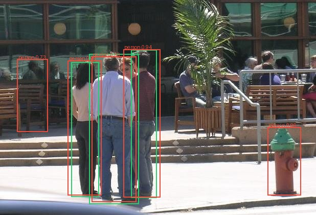
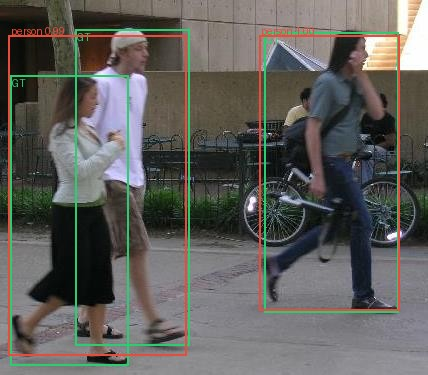
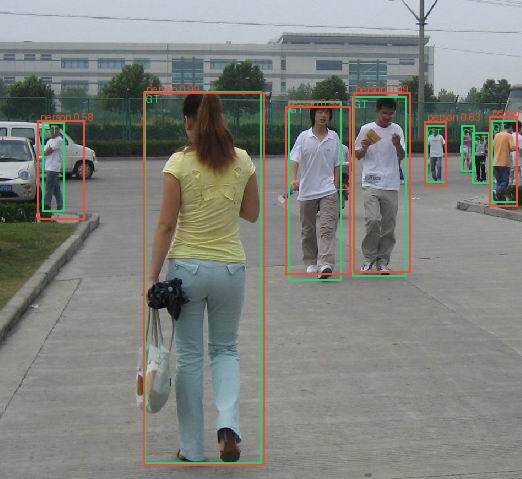
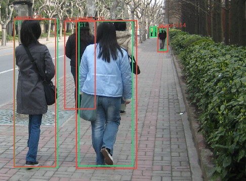
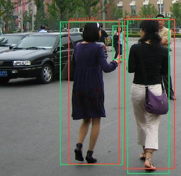
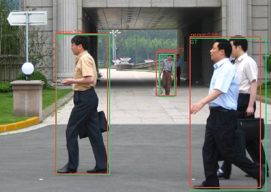
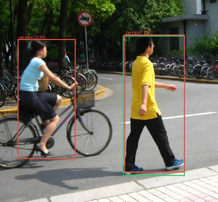

Validation failure gallery

PennPed00056: false_positive
PennPed00066: false_negative
FudanPed00058: false_negative, localization_failure, low_confidence_correct
FudanPed00063: false_negative, localization_failure
FudanPed00071: false_negative, low_confidence_correct
FudanPed00007: low_confidence_correct
FudanPed00029: false_positive